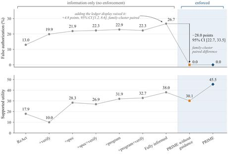

PRIME: Towards Verifiable Evidence-Grounded Reasoning in LLM Agents
arXiv preprint arXiv:2610.22426, 2026
The problem
LLM agents are used to check records against an organization’s requirements — whether a vulnerability report is ready for investigation, say. Requirements usually allow several ways to be met, and agents fail in two directions: they accept a record after a required check has failed, or they settle for a weaker conclusion without trying another route that would still have succeeded.
What we do
PRIME (Precommitted Rules for Inference from Minimal Evidence) fixes the evidence routes before the agent looks at a case, specifying how each conclusion may be justified. A separate program records each check result and refuses any conclusion those results do not justify. It also points the agent at the checks that would support a stronger conclusion, or runs them itself, so that refusal is not the only correction available.
What it buys you
On 480 public-record tasks at a twenty-call budget, an agent shown the requirements reported unjustified conclusions on 26.7% of them; under PRIME that falls to none. Refusal alone is not the whole story — it buys the guarantee by giving up value. The directions and the extra checks are what win that value back, lifting the score for justified conclusions from 30.1 to 45.5 out of 100. The tasks come from SUFFICE, a benchmark of evidence-based review tasks built from real public records with a deterministic scorer.

Cite
@article{khosravi2026prime,
title = {PRIME: Towards Verifiable Evidence-Grounded Reasoning in {LLM} Agents},
author = {Khosravi, Hamed and Huo, Xiaoming},
journal = {arXiv preprint arXiv:2610.22426},
year = {2026}
}